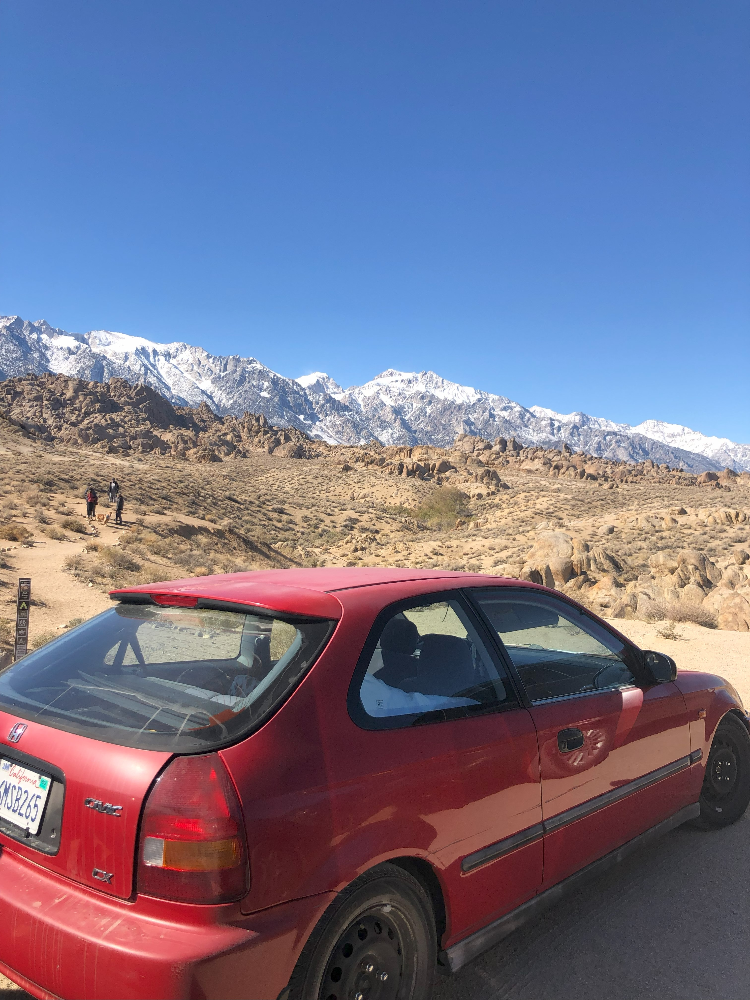

Function Generator
Description: The user can use an external key board to select between different waveforms to display. Different keys can also select the duty cycle or frequency.
Tools/Technologies Used: STM32, DAC, SPI
Link to projectDescription: The user can use an external key board to select between different waveforms to display. Different keys can also select the duty cycle or frequency.
Tools/Technologies Used: STM32, DAC, SPI
Link to projectDescription: I created a controls system design that will affect the pitch and torque of the system to get peak power of the system
Tools/Technologies Used: Simulink, Matlab
Link to projectDescription: Upgraded my 1996 Honda Civic hatch with a b18c Integra GSR engine. Procured parts and negotiated deals for a constrained budget of $12k raised from part time jobs
Tools/Technologies Used: torque wrench
